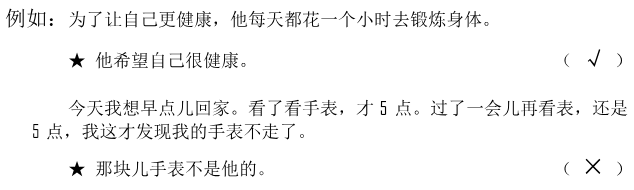
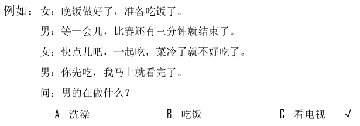
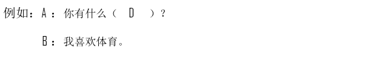
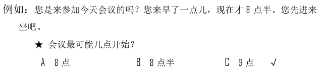
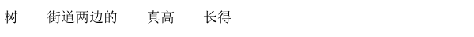

🎧 Phần nghe · Câu 1–40
Bấm phát để bắt đầu nghe. Thời gian làm bài bắt đầu khi bạn nghe hoặc chọn đáp án.
Nghe · Phần 1 · Câu 1–5
Nghe và chọn hình A–F phù hợp.

Nghe · Phần 1 · Câu 6–10
Nghe và chọn hình A–E phù hợp.
Nghe · Phần 2 · Câu 11–20
Nghe và chọn ✓ (đúng) hoặc × (sai).

Câu 11
★她花了105元。
Câu 12
★他要帮弟弟照顾狗。
Câu 13
★他们把问题解决了。
Câu 14
★小王学东西很慢。
Câu 15
★不高兴时可以听听歌。
Câu 16
★女儿今晚不回来吃饭。
Câu 17
★他更喜欢上数学课。
Câu 18
★李先生换办公室了。
Câu 19
★张叔叔是爸爸的同学。
Câu 20
★他认为春季很漂亮。
Nghe · Phần 3 · Câu 21–30
Nghe và chọn đáp án A, B hoặc C.

Câu 21
Câu 22
Câu 23
Câu 24
Câu 25
Câu 26
Câu 27
Câu 28
Câu 29
Câu 30
Nghe · Phần 4 · Câu 31–40
Nghe hội thoại và chọn đáp án A, B hoặc C.

Câu 31
Câu 32
Câu 33
Câu 34
Câu 35
Câu 36
Câu 37
Câu 38
Câu 39
Câu 40
Đọc · Phần 1 · Câu 41–45
Chọn câu A–F phù hợp để ghép với từng câu.
Đọc · Phần 1 · Câu 46–50
Chọn câu A–E phù hợp để ghép với từng câu.
Đọc · Phần 2 · Câu 51–55
Chọn từ A–F điền vào chỗ trống.
Đọc · Phần 2 · Câu 56–60
Chọn từ A–F điền vào chỗ trống của hội thoại.

Đọc · Phần 3 · Câu 61–70
Đọc đoạn văn và chọn đáp án đúng.

Câu 61
我们把这张桌子搬到那边去吧，放在中间会影响大家走路的。
★他们要把桌子：
★他们要把桌子：
Câu 62
经理，我觉得服务员还是有点儿少，现在来店里吃饭的客人越来越多，特别是中午，大家经常忙不过来，您看要不要多找几个人？
★说话人是什么意思？
★说话人是什么意思？
Câu 63
中国有句话叫“不怕慢，只怕站”。意思是说不怕走得慢，就怕站着不走。走得再慢，一步一步地走下去，也能走到想去的地方。
★这段话主要想告诉我们：
★这段话主要想告诉我们：
Câu 64
如果别人告诉你有件衣服很好看，你可能不会相信，但如果是你自己看到的，那就不一样了，因为和耳朵比，人们更愿意相信自己的眼睛。
★根据这段话，人们更愿意相信：
★根据这段话，人们更愿意相信：
Câu 65
我哥哥是出租车司机，这么多年来，他的车几乎到过这个城市的每个地方，所以他对这个城市非常了解。
★他哥哥：
★他哥哥：
Câu 66
以前，这个图书馆的右边都是些又矮又旧的房子，没想到现在变成了一个大花园，有花有草，漂亮极了。
★过去，图书馆的右边是：
★过去，图书馆的右边是：
Câu 67
“张”是我的姓，“雪”才是我的名字。中国人习惯把姓放在前面，把名字放在后面，这跟你们国家不一样。
★中国人的名字：
★中国人的名字：
Câu 68
经过这件事情，我们两个的关系变得比以前更好了，现在我们经常下班后一起吃饭、看电影。
★他们两个：
★他们两个：
Câu 69
有些女孩儿认为越瘦越好看，为了能变瘦，有时候饭也不吃，这样做对身体很不好。其实，健康才是最重要的。
★这段话告诉我们：
★这段话告诉我们：
Câu 70
我们常说做决定前一定要认真想想，但有时你会发现机会不等人，所以想清楚后就必须马上去做，不要以为机会会一直在那儿等着你。
★根据这段话，我们应该：
★根据这段话，我们应该：
Viết · Phần 1 · Câu 71–75
Sắp xếp các từ đã cho thành câu hoàn chỉnh.
Phần viết được đối chiếu với đáp án mẫu; bỏ qua khoảng trắng và dấu câu. Điểm hiển thị là điểm luyện tập.

Câu 71
Câu 72
Câu 73
Câu 74

Câu 75
Viết · Phần 2 · Câu 76–80
Nhập chữ Hán phù hợp với pinyin vào từng ô trống.